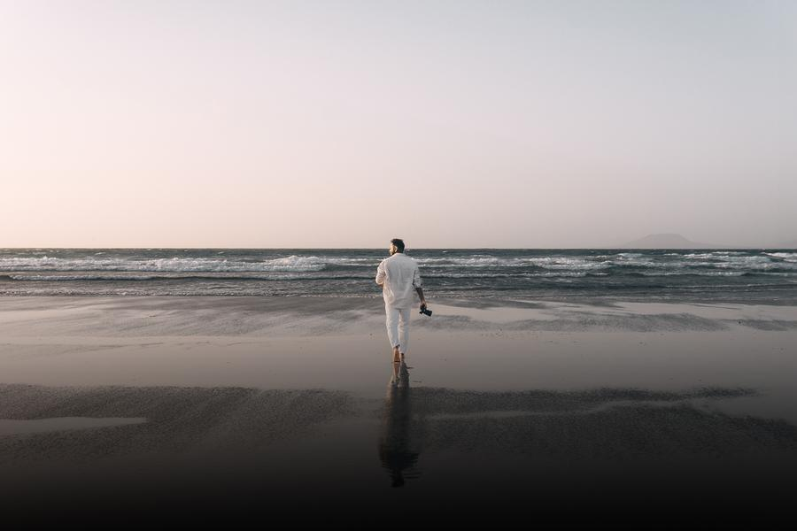
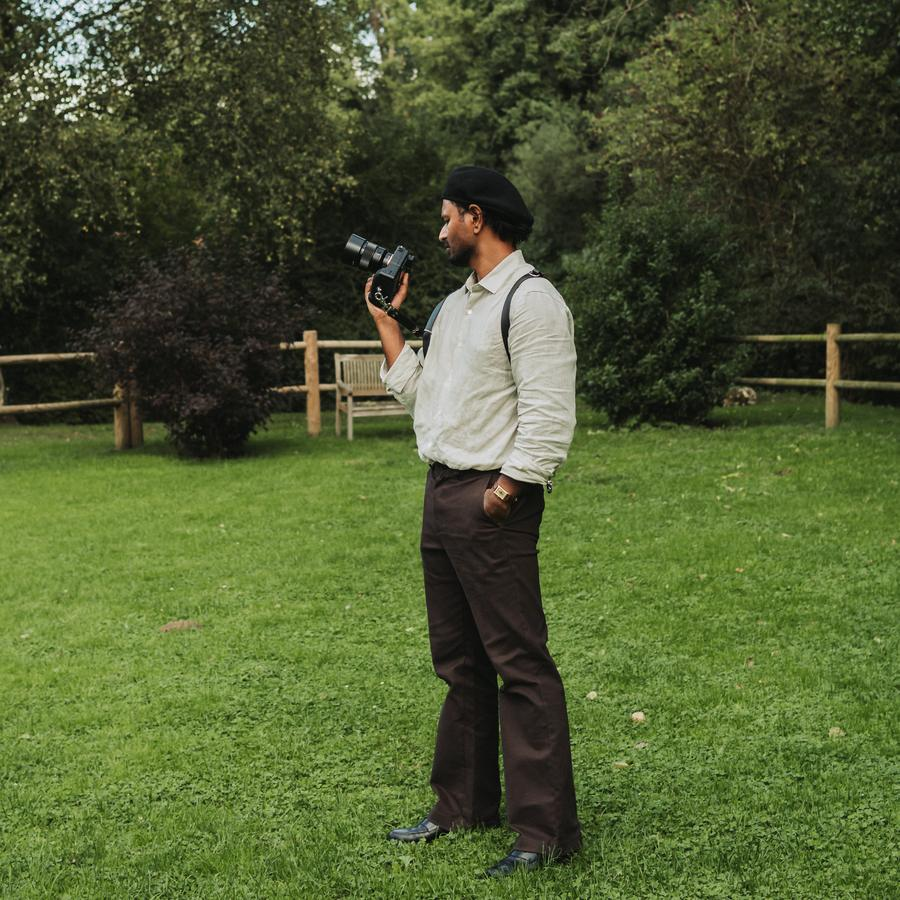
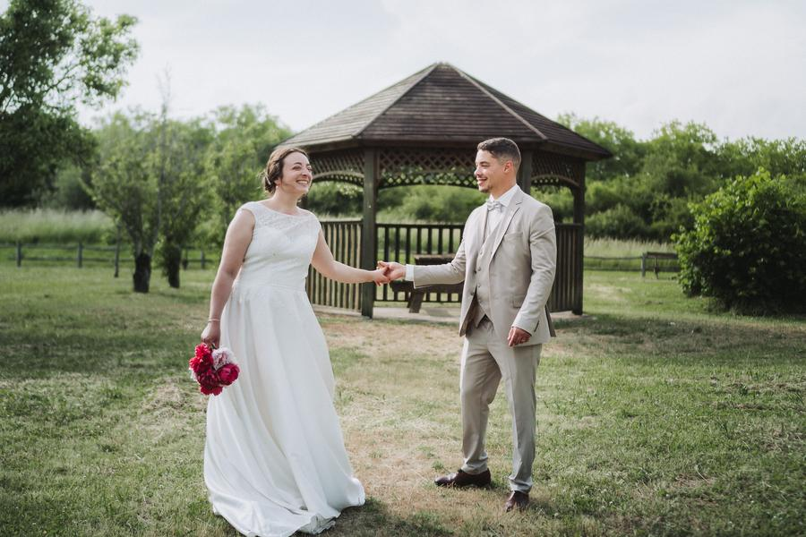
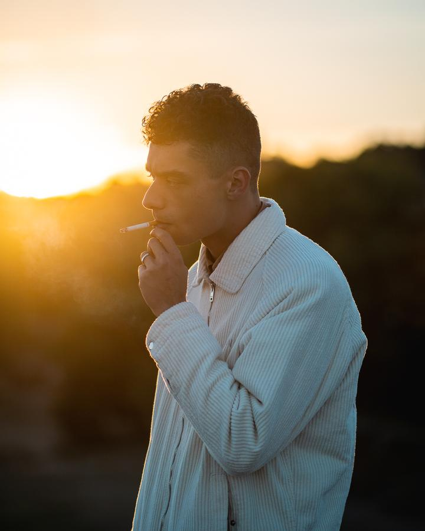
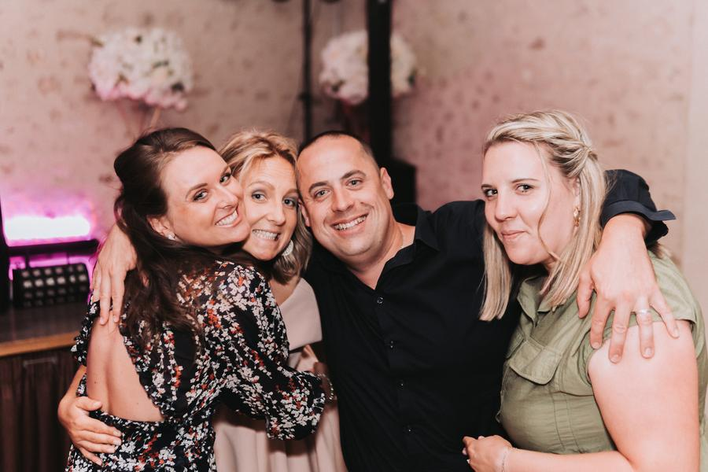
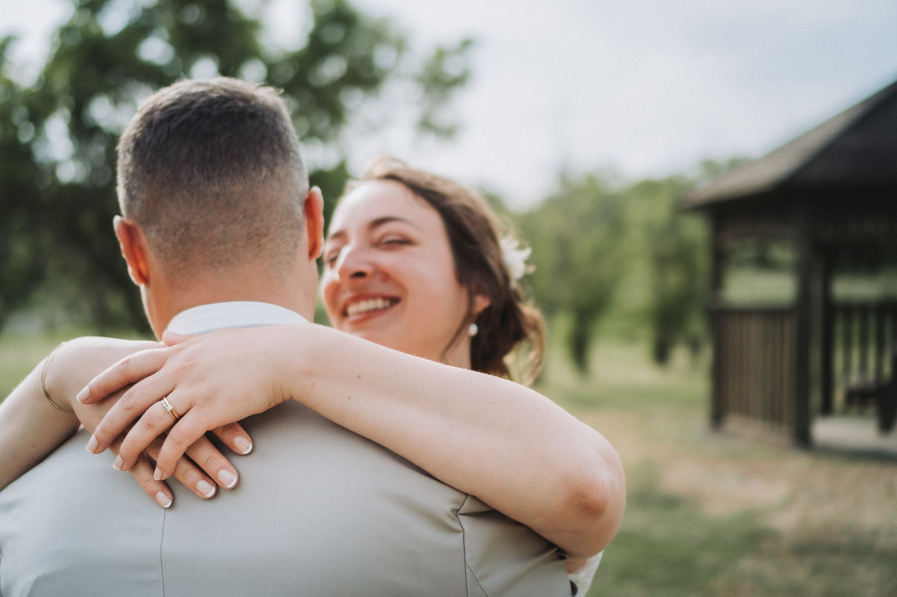

Être là au bon moment, discret mais attentif, pour saisir ce qui rend votre journée unique.
Je suis Adavan, photographe à Tours. Je capture les moments qui comptent, sans chichi et sans pose forcée.
Mariage, portrait ou événement, j'adapte mon approche à chaque situation. Pas de formule toute faite : on échange, on se rencontre, et je m'imprègne de votre univers pour créer des images qui vous ressemblent.
Le résultat, ce sont des photos spontanées et vivantes, dans lesquelles vous vous reconnaissez.


Prestations
Trois façons de travailler ensemble, une même manière de regarder.
-
Mariage
Des préparatifs à la soirée, je reste discret et je suis le mouvement. Des images naturelles, quelques plans serrés, et les portraits posés que vos familles attendent.
Voir les mariages
-
Portrait
En ville ou en extérieur, à votre rythme. On discute, on marche, et les photos viennent avec. Seul, en couple ou entre proches.
Voir les portraits
-
Événement
Anniversaire, soirée, fête d'entreprise ou concert : je saisis l'ambiance et les réactions, sans interrompre le moment.
Voir les événements
Cinq mariages,
cinq histoires
Chaque couple a son rythme. Faites défiler pour parcourir quelques journées que j'ai eu la chance de photographier, et cliquez sur une image pour l'ouvrir en grand.
Camille & Chakir
Alison & Jérôme
Laurène & Quentin
Pauline & Zaafir
Vous préparez votre mariage ?
Vérifier mes disponibilités
Pas de formule toute faite. Des souvenirs qui vous ressemblent.
Portfolio
Comment ça se passe
Du premier message à la livraison de vos photos, quatre étapes simples.
-
1
On échange
Vous me racontez votre projet par message ou par téléphone. Je vous réponds avec mes disponibilités et une proposition adaptée.
-
2
On se rencontre
Autour d'un café ou en visio, on parle de vos envies, du lieu et du déroulé. C'est le moment où je m'imprègne de votre univers.
-
3
Le jour J
Je me fais discret, j'anticipe les moments forts et je vous guide juste ce qu'il faut pour les portraits.
-
4
Vos photos
Je trie et retouche chaque image une à une, puis je vous livre vos photos en haute définition.
Travaillons ensemble
Chaque projet est unique. Écrivez-moi quelques lignes sur ce que vous imaginez, je prends le temps de vous répondre personnellement.
- Téléphone
- 06 41 04 03 60
- contact@adavan.fr
- @adavanshots
- Secteur
- Tours, Indre-et-Loire et au-delà sur demande